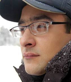

Roads and frontiers
of South Caucasus
are as not serious,
funny and difficult
to overcome as the nations
populating our region.
Wherever you go
in South Caucasus,
all roads lead to Hell.
And we did manage to pollute
every plot of this land!
 Alekper Aliyev
Azerbaijan
Was born January 28, 1978 in Baku. After leaving the eighth school grade in native town, continued study in Istanbul state college with a oriental bias. In 1996 entered the Istanbul Marmara University, faculty of journalism.
Worked as PR director and translator in “Phoenix” publishing house. He had translated around 30 books into Turkish.
In 2001 returned to Baku and begun the journalistic practice. Wrote articles in several newsletters, such as “Gundelik Azerbaijan ( the Azeri version of “Realniy Azerbaijan”), “Bakinskiye vedomosti”, news portal “Day.az”. Today he is the columnist of “Alma” weekly and chief editor of culturologic internet portal www.kultura.az.
Author of three books: “I am scumbag”(collected poetry) and novels “Dreams of Goethe”, “God’s end”.